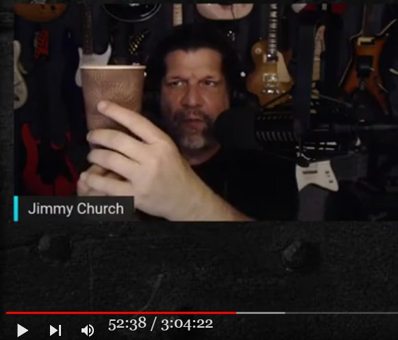

小さな orb を空母サイズの UFO と誤認した典型的な事例

要旨
- ブラジル政府が公認したという有名な UFO 写真（下）がある。

従来、この UFO のサイズは直径 15m 以上だと見積もられてきた。ブラジル政府はこの UFO が遠くの山の裏側に回り込み、続いてその山の裏側から出現したという目撃証言に基づいてこのサイズを見積もった。
私はこの UFO は撮影地点から近い位置にある小さな 自転する orb だと判断している。なぜ、この写真の目撃者たちは近距離の小さな orb を巨大サイズの UFO と誤認したのか？
この謎を解く鍵が以下で取り上げる具体的な事例。
前置き
- この動画には音声書写（自動生成）が付与されていない。手抜き
- 51:40 Jimmy Church 自身の体験。白昼。くっきり見えた。10-15秒間目撃。Mt. Adams の麓（*: James Gilliland の ECETI の場所）で目撃（望遠鏡ごし）。肉眼でも確認。原油タンカー並のサイズだった。 - 推測だが、UFO は高さが 400ft のビール缶のように見えた。14マイル先の山頂の裏側から出てきた。黒い円柱が縦になって回転しているような光景（下の写真のようにコーヒーの紙コップをその UFO に見立てて情景を説明している）。 - 銀色の円が片面に描かれていて回転とともにそれが見え隠れしていた。上下端はクローム色だった。太陽が当たっていた。 - 30人と一緒に目撃。カメラを探している間に消えたので撮影はできなかった。 - 57:45 （この時の現場の録音音声を再生。皆、驚いて声をあげている）隣にいた Steve Murillo（元・海軍のパイロット）は UFO はきらめていた(shimmering)と発言している。動画(3:04:22)
Ep. 1621 John Michael Godier The Event Horizonコメント
- この Jimmy Church の証言に対してゲストの John Michael Godier （下：SF作家、科学解説者）は科学的な解説なるものを試みているが、凡庸で退屈な内容なので省略。- 私はこの UFO を次のように解釈する。 - Mt. Adams 付近には多数の断層帯 (*1) がある。そのため EMF 異常が多発し、上空に orb が発生する。orb は夜間は発光して光って見えるが、日中は orb のもつエネルギーに応じて銀色や灰色、黒などにも見える。 - この UFO が Adams の山頂の裏から出現したから、400 ft. の高さがあると Jimmy Church は推定した。だが、この UFO は山頂の裏から出現したのではなく、普通の orb が Jimmy Church の地点からさほど遠くない空中に出現した筈。 - なぜなら orb は固体ではなく薄いプラズマなので、空や雲を背景にすると黒や灰色などに見えて目につくが、白昼の山を背景にするとほとんど目につかない。つまり、せいぜい数百m 先の orb が山を背景に出現して、上空へゆっくり上昇した。 - やがて orb の背景が山頂より上の上空に至って初めて Jimmy Church らの目についた。そのため、 Jimmy Church らは山頂の裏側から巨大 UFO が出現したと錯覚した。 - なお、この orb は低速で回転していたので orb のムラが黒の機体にある銀色の円として見えたのだろう。
(*1)
ECETI Ranch で頻繁に目撃される UFO の正体は、地殻の圧力が生成した球電だろう。 (2020-11-24)追記
- 下の過去記事でもこの件を取り上げていたことに気づいた。 Jimmy Church : 白昼、山頂の裏側から巨大 UFO が出現するのを私を含めた大勢が目撃した。 (2019-11-29) (2022-05-17)
初出
Jimmy Church の体験 : Mt. Adams の山頂の裏から巨大な円筒形 UFO が出現するのを大勢で目撃 (2022-05-17)
2022-09-30 追記
- 本日、動画を確認したところ音声書写（自動生成）が付与されていたので関連部分の音声書写（自動生成）を以下に添付する。この中では当時、現場で録音された音声も再生されている。問題の UFO の動画は撮影されず、写真のみがあると Jimmy Church は語っているが、ざっと見たところその写真は上の動画には含まれていない。
this is something i've mentioned 51:28 many times on this show so i apologize to those that have heard 51:34 it before but those that haven't uh which includes you john i i don't know maybe you've heard the story but um 51:41 i'm up in in washington state and i've got uh i'm hosting uh my conference i've 51:47 got about three 300 people there but outside i'm taking a break and i'm sitting at a picnic 51:54 table i've got about 30 friends around me um we're goofing around i'm sitting there 51:59 with binoculars on a tripod at this picnic table and i'm looking at birds 52:05 i'm literally looking at mount adams which is 14 miles away we know that 52:11 and i'm looking at the birds i'm looking at the peak of mount adams when at that moment 52:17 14 miles away from behind the peak of the mountain pops up this guesstimating 52:25 400 foot tall beer can and it's spinning like this and there 52:32 was a a a silver circle on one side you could 52:37 see it rotating it's black and it's got like a thick chrome top and a thick chrome bottom 52:43 and it's going across the canals what right and i freak out 52:49 and i look again in the binoculars i'm like that is the biggest thing i've ever seen in my life 52:55 and it's up you know and it's going it's in the middle of the day it's three o'clock in the afternoon and the sun is 53:00 shining on it it's razor sharp in focus and i lose my mind 53:06 and uh i'll send you the video so i jump up and i'm like man 53:12 video video i'm losing it it's like five seconds later the whole event lasted 53:17 about 10 or 15 seconds i come back to the binocular everybody sees it and i look at it 53:23 with my naked eye and i could see the you know i could see it i could see it spinning and i could see the sunlight 53:28 and every time that circle came around it right it would light up and uh and it's gone i go back to the binoculars 53:35 and i take like one more i'm trying to absorb it right into my brain what i'm 53:41 seeing and i look at it from top to bottom and i come back out to look again and somebody says it's gone 53:48 it's like what i thought we were gonna see it for like an hour moving across the sky i said what do you mean it's 53:55 gone i go back to my it phased out man it phased out i go back to the it's gone 54:02 it's gone now i can't say that was alien 54:09 but i can tell you this that was the craziest thing and that was in the middle of the day this was in 54:15 that night this wasn't lights in the sky this was 400 feet tall 54:21 14 miles away from behind the mountain and i i am left with nothing that i want to 54:28 know what that was that's it somebody knows something that is uh uh 54:37 um when when you share that with 30 other people and we all see this together they 54:43 need those answers i need those answers but that wasn't that wasn't our military 54:50 --- JMG: no well we we were handicapped by the problem that and curse melon brings us 54:55 up a lot in his articles that were handicapped by the government's unwillingness to 55:01 release data because whatever you saw there's probably a radar record if it was uh indeed solid 55:07 um but there's probably a radar record of that you know something that big you know that high if it's up as high as 55:13 mount adams it's it's pretty high um now i can tell you now and this don't 55:20 shoot the skeptic but atmospheric things the atmosphere can do weird things and create photo morganas and things like 55:26 that but maybe that's a little high for that if it was you know at that altitude above the atmosphere 55:32 because you know usually this stuff is is a phenomenon of being near the horizon 55:38 um so you know it wasn't a --- JC: this wasn't a floating exxon oil tanker 55:44 --- JMG: yeah well the other question is that if it was something that you didn't immediately recognize 55:50 what it was because if it was an oil tanker you know out in the ocean or something you'd know that right but this 55:55 you don't know so --- JC: i can't describe it any more than what i just said to you it was uh 14 miles away 56:03 it popped out from behind the mountain it didn't come in from the other side of the peak of the mountain i didn't see 56:09 any of that uh it and i was looking for probably 10 or 15 minutes there and i would have 56:14 seen it come in from somewhere else it just came in but this 56:21 no wings you know nothing you know nothing that would it it was crazy so now when 56:28 when i see something like that um and and i hear others say 56:34 it's your imagination or it's there's you it wasn't there or was it no no no 56:40 no no you're not going to change anything about what happened but you can't tell me that there's nothing going 56:46 on --- JMG: did everyone did everyone present describe exactly the same object 56:46 on did everyone did everyone present describe exactly the same object --- JC: okay uh 56:52 you know what check this out check this out um i will play you 56:59 this is the video um i'm just gonna play the audio and uh 57:05 let me let me pull it up here just just stay with me where is it 57:18 yeah you gotta love live radio right you gotta love live radio 57:25 and yeah and they got to avoid the dead era you know yeah i wasn't expecting uh to play this 57:33 um --- JMG: well the reason i asked was that sometimes there's some theories floating 57:40 around about people that that --- JC: okay here it is tell me somebody took a picture 57:46 i swear to god i will shoot everybody here i disappeared now oh no there it is 57:54 there it is i got it i got it i got it give us a position man [Music] 58:00 no the ufo wasn't a bird no that was shimmering that was snowing it was it was a ball it was huge 58:08 okay who shot it so uh that voice there that you hear in that voice there that you hear in 58:14 the background that's steve morillo and you probably know steve um but 58:20 fighter pilot uh for the marines uh united states naval academy graduate he 58:25 was sitting next to me that was his comment it was it was it was shimmering it was round it was shimmering 58:33 and uh and that's it so that's i don't have 58:38 i've got pictures but i don't have video everybody missed it it only lasted for 15 seconds 58:44 and uh and you can hear steve say it just disappeared you know and that everybody saw the same thing 58:51 and it just phased out and it's forever gone you know we